Saat pergi liburan ke Bali, tak lengkap rasanya kalau belum mencoba hidangan khasnya seperti Nasi Campur Bali atau lezatnya olahan Babi Guling yang khusus untuk penikmat kuliner non halal. Liburan ke Bali akan jauh lebih lengkap jika jangan hanya nongkrong santai di café-café trendi dengan sajian menu-menu fastfood atau Western saja. Coba luangkan waktu sebentar untuk mencoba mencicipi kuliner lokal khas Bali yang tradisional dengan citarasa yang tak ada duanya. Kuliner tersebut biasanya banyak ditawarkan di resto-resto lokal, tempat makan yang sederhana maupun warung-warung lokal milik warga setempat.
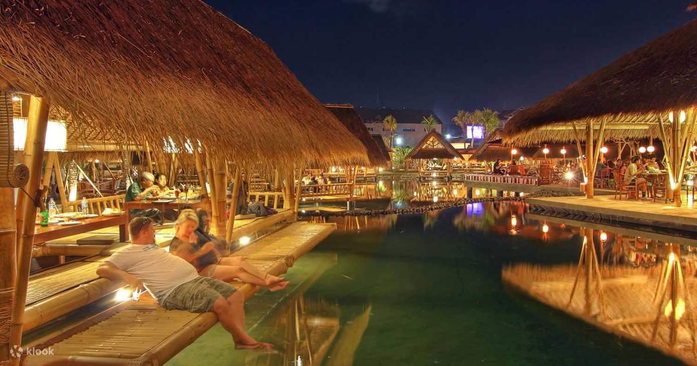
Bagian terbaik saat Anda mencicipi kuliner khas Bali, Anda juga bisa ngobrol santai dengan masyarakat setempat yang terkenal hangat dan ramah. Namun sebelumnya, saat mengunjungi Bali Anda harus tahu dimana tempat-tempat kuliner di Bali yang menawarkan kuliner yang lezat agar tak salah pilih. Nah, berikut rekomendasi pilihan tempat kuliner di Bali yang akan memberikan pengalaman tak terlupakan mencicipi citarasa kuliner khas Bali.
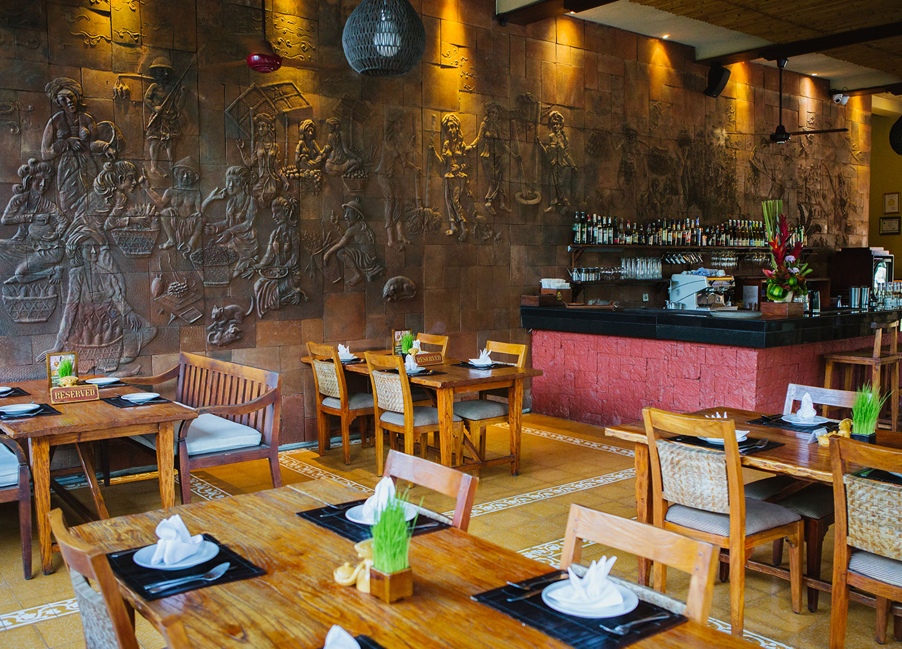
JL. BAKUNG SARI, KUTA, KABUPATEN BADUNG, BALI
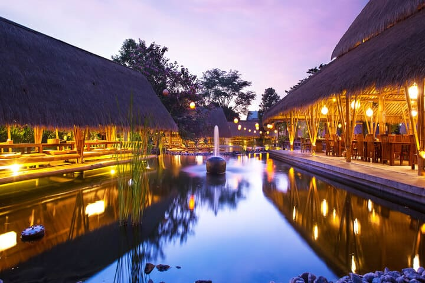
Jl. Nakula No. 88, Sunset Road, Kuta, Bali
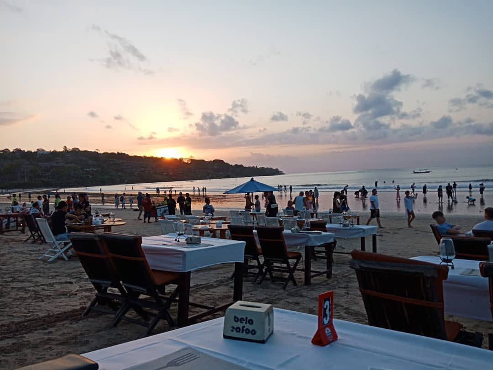
Four Season, Jalan Hotel, Jimbaran, Kec. Kuta Sel., Kabupaten Badung, Bali
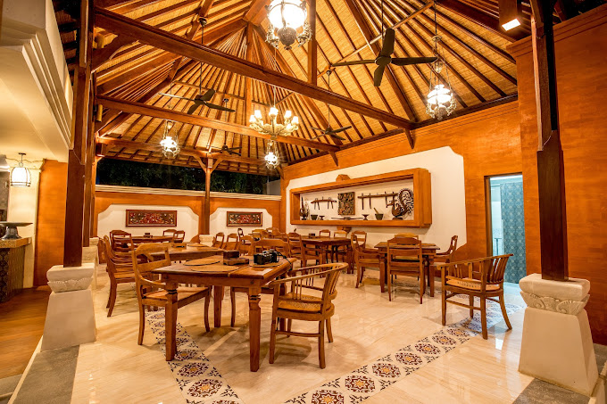
Jl. Pratma, Tanjung Benoa, Kuta Selatan, Bali
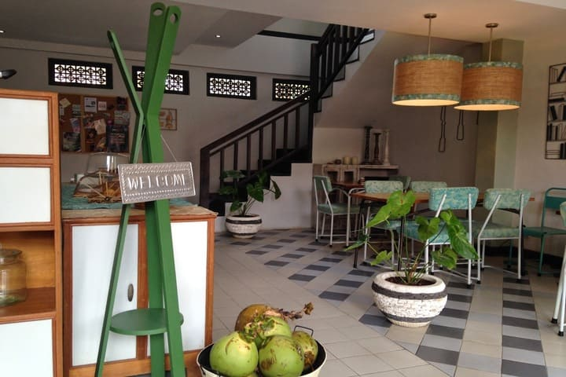
Jl. Sri Wedari No. 4, Ubud, Gianyar, Bali
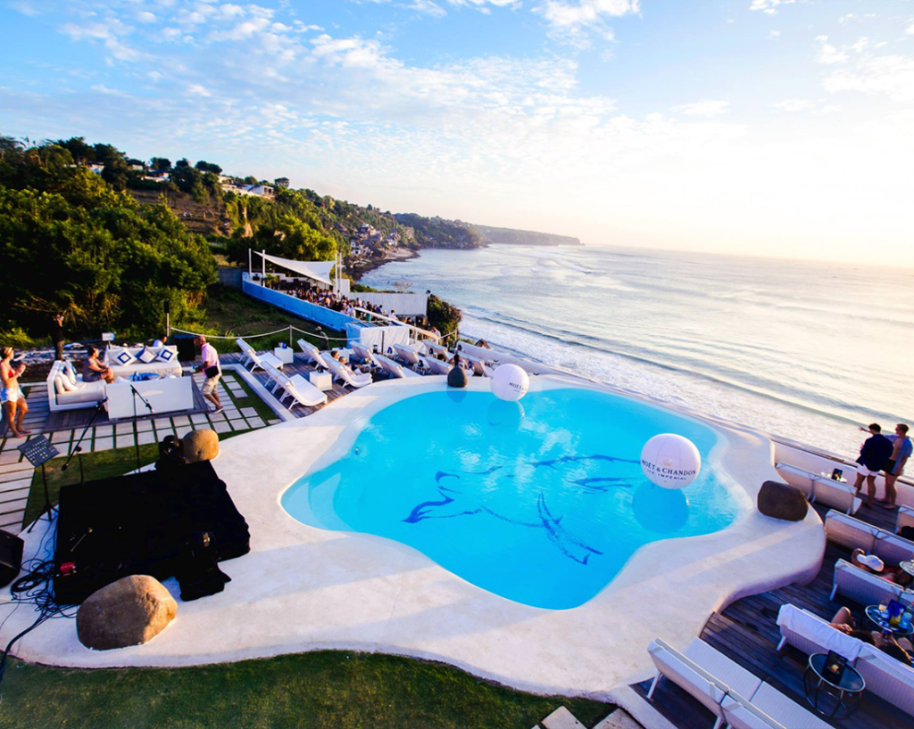
Jl. Pantai Cemongkak, Pecatu, Kec. Kuta Sel., Kabupaten Badung, Bali
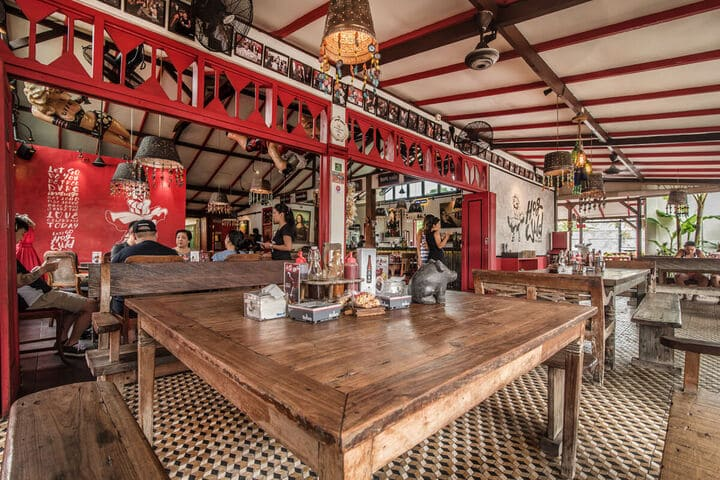
Jl. Batu Belig No.41, Kerobokan, Kuta Utara, Badung, Bali
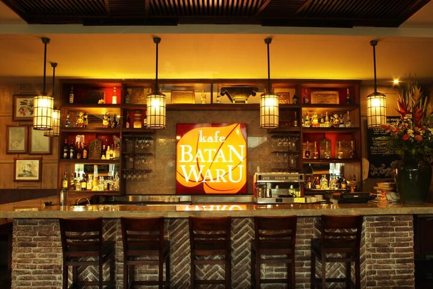
Jalan Kartika Plaza, Lippo Mall Kuta, Bali
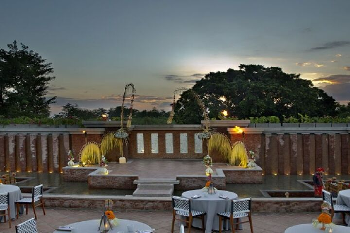
Jl. Krg. Mas Sejahtera, Krg. Mas Estate, Jimbaran, Bali
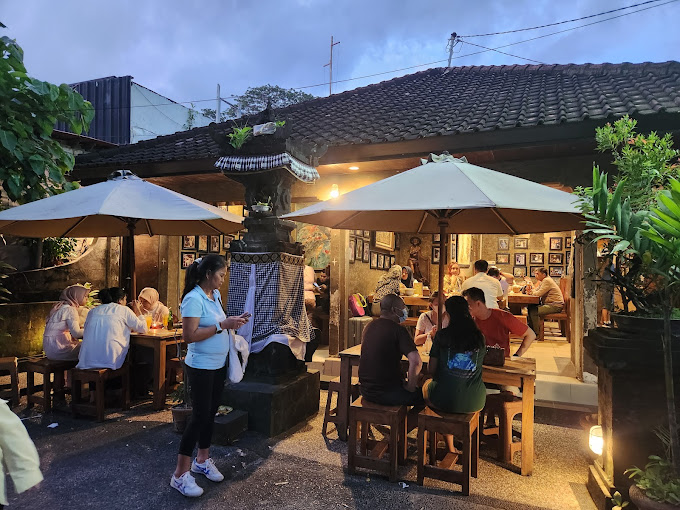
Jl. Hang Tuah No. 45, Sanur, Bali
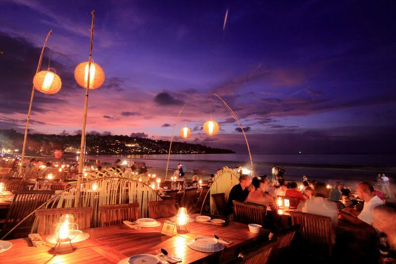
Jl. Four Seasons Muaya Beach, Jimbaran, Kec. Kuta Sel., Kabupaten Badung, Bali
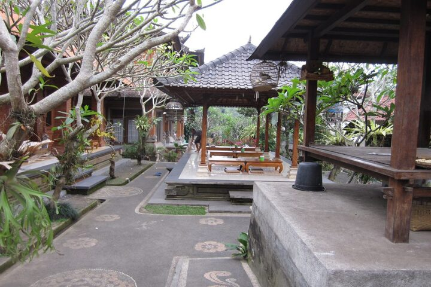
Jl. Raya Kedewatan 18, Kedewatan, Ubud – Bali
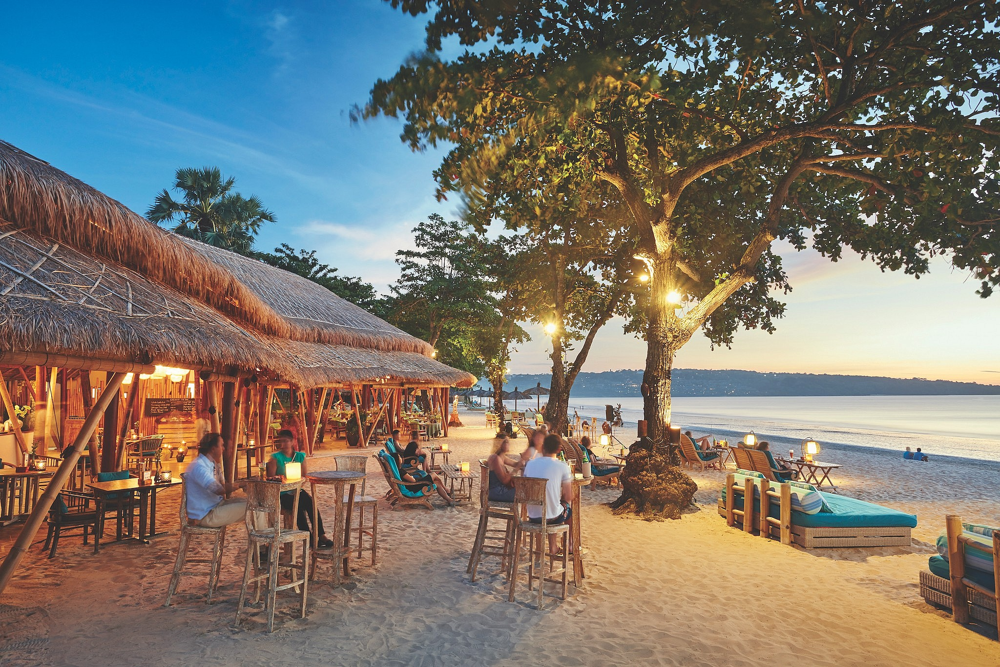
Jl. Pemelisan Agung, Jimbaran, Kec. Kuta Sel., Kabupaten Badung, Bali
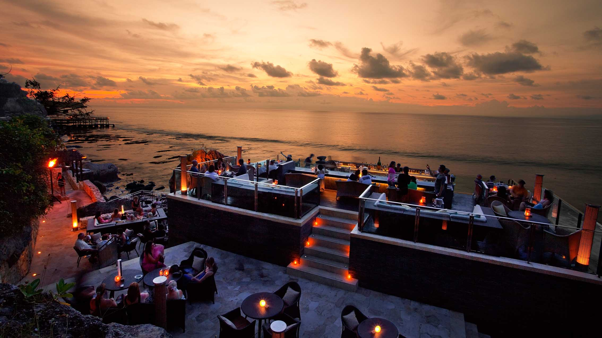
Jalan Karang Mas Sejahtera, Jimbaran, Kec. Kuta Sel., Kabupaten Badung, Bali
Demikian tadi informasi tentang tempat kuliner di Bali yang menawarkan citarasa tradisional yang menggoda. Saat liburan ke Bali jangan lupa untuk mampir dan mencicipi salah satunya, agar tak rugi karena melewatkan kuliner lezat yang ditawarkan. Semoga bermanfaat!

Hubungi
Kami